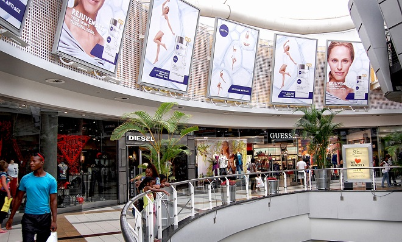
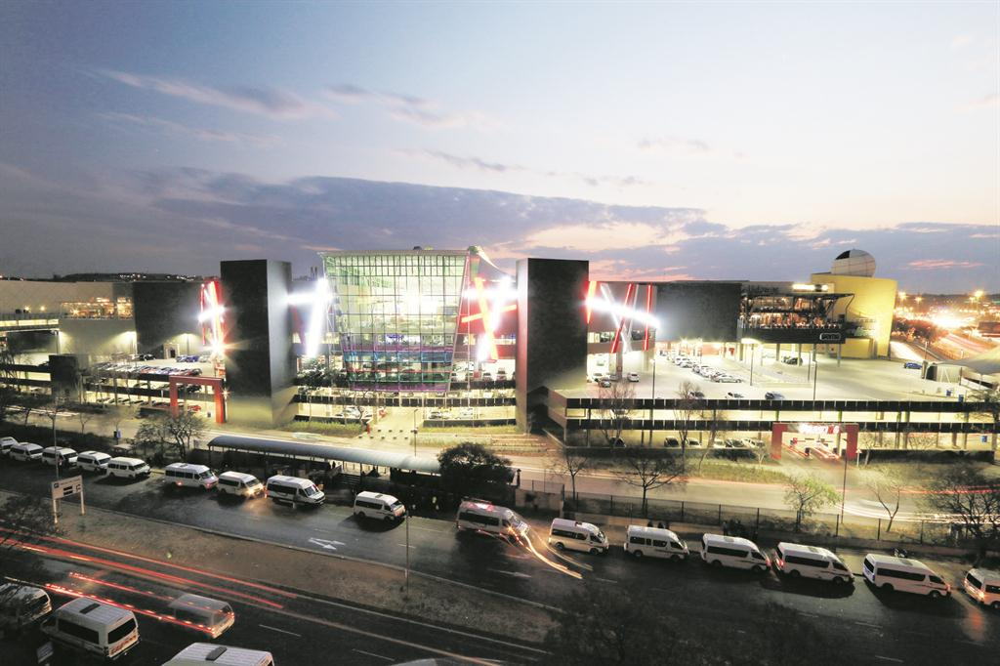

Pine City Mall is a shopping mall in Waterkloof Glen, Pretoria, South Africa, owned by development company Pareto.Pine City Mall is designed around three spaces – the Food Court, the keyhole malls and focal points, and a large internal garden square surrounded by restaurants. Pine City has a total lettable floor space of 177,000m², over 500 stores, 16 parking entrances, 12 parking exits and 8,250 parking bays. It is situated at the corner of Lois Avenue and Atterbury Road close to the N1 Johannesburg - Polokwane Highway